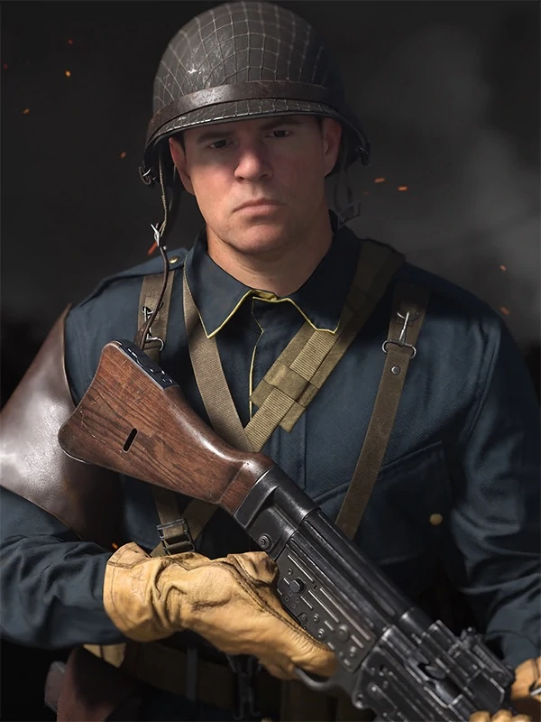

CHARACTER INFORMATION

A product of New York, pilot Wade Jackson is more at home in the sky than he is on the ground… And he is adamant on doing all his own stunts, even if the mission does not call for it.As the daring hotshot of the group, Wade would rather be a lone wolf, but welcomes competent team members if they don’t get in his way of all his stunts and tricks.
Growing up in Brooklyn as a first-generation American, Jackson is a rebel who often finds himself first to a fight, especially if it’s about respect for his family. Bright, yet not engaged with traditional schooling, Jackson discovered his love for speed at the age of 16 through an afterschool repair club. He and his friends often took the vehicles at the shop for joyrides on the newly opened Interboro Parkway, where he would be the only daredevil able to tame the road’s dangerous curves at high speeds.
His newfound rigor for adrenaline paid off after high school, when he was accepted into the Navy’s enlisted aviation cadet program and earned his pilot’s wings in a dive bomber. Since then, he has become a true force in the Pacific.
Charismatic and enthusiastic, Wade enjoys a challenge and relishes the prospect of showing off his natural talents in the spotlight to prove he’s the best. He is egotistical and considers himself special, believing he can fix every problem through bold action.
He was the pilot of his fighter bomber S-17, with Mateo Hernandez serving as his tail gunner. At Midway, they were tasked with defending the American fleet against Japanese airplanes. They defended the squadron from many Zeroes and took down an aircraft carrier. A retaliation strike by the Japanese Zeroes resulted in a shortage of dive bombers. Nevertheless, Wade and Mateo volunteered to do another run and successfully sunk the 2nd aircraft carrier, declaring victory.